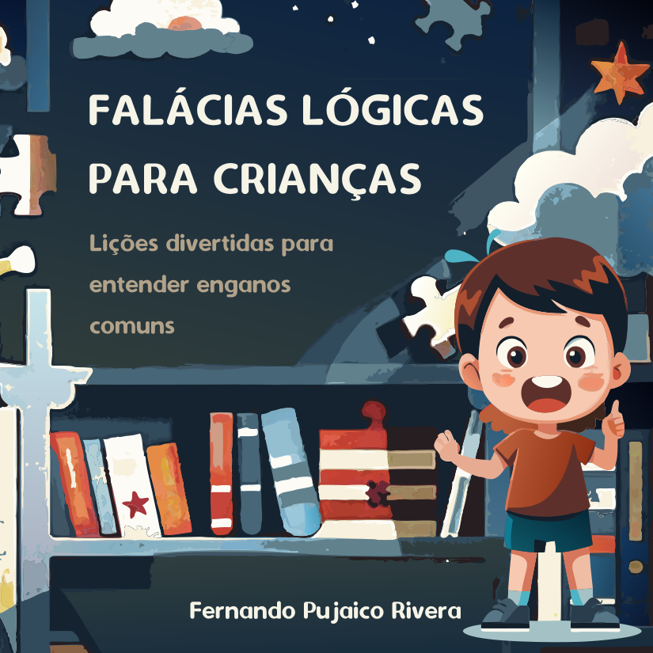
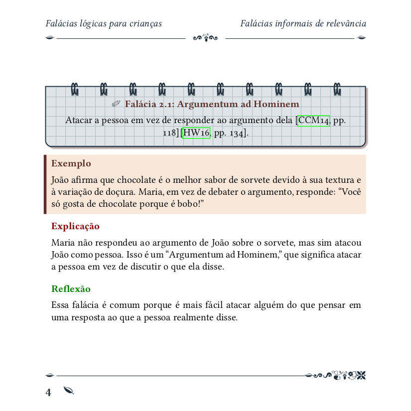

Falácias lógicas para crianças: Lições divertidas para entender enganos comuns

Neste livro, as crianças se tornam verdadeiros detetives lógicos, aprendendo a identificar e evitar os erros de raciocínio que todos enfrentamos no dia a dia. Com lições simples, este guia ensina de forma acessível e divertida o que são falácias lógicas e como reconhecê-las. Cada capítulo é uma oportunidade para explorar situações cotidianas onde o pensamento pode nos enganar. Através de exemplos práticos, as crianças aprenderão a questionar, raciocinar claramente e resolver problemas de forma brilhante, como verdadeiros gênios da lógica. Este é o livro perfeito para quem deseja desenvolver habilidades críticas desde cedo, enquanto se diverte em um emocionante desafio intelectual. Ideal para leitores curiosos e para pais e professores que desejam incentivar o pensamento claro e criativo nas crianças.
Comprar livro impresso
Brasil

Usando este link, você pode adquirir no Brasil uma versão em cores do livro Falácias lógicas para crianças: Lições divertidas para entender enganos comuns.

Usando este link, você pode adquirir uma versão em cores do livro Falácias lógicas para crianças: Lições divertidas para entender enganos comuns.
Resto do mundo
Usando este link, você pode adquirir uma versão em cores do livro Falácias lógicas para crianças: Lições divertidas para entender enganos comuns.
Screenshots

Doações
Compre-me um café ☕
Se você aprecia meu trabalho e gostaria de apoiar meus projetos, você pode me pagar um café! ☕ Seu apoio ajuda a manter meus projetos funcionando e me permite criar mais ferramentas úteis.
Usando cartão de crédito
Se você aprecia meu trabalho e gostaria de apoiar meus projetos, você pode me doar $3 USD mediante cartão de crédito Seu apoio ajuda a manter meus projetos funcionando e me permite criar mais ferramentas úteis.
Mediante PIX
 Se você aprecia meu trabalho e está no Brasil, você pode me enviar um
PIX de R$ 7.
Seu apoio ajuda a manter meus projetos funcionando e me permite criar mais ferramentas úteis.
Se você aprecia meu trabalho e está no Brasil, você pode me enviar um
PIX de R$ 7.
Seu apoio ajuda a manter meus projetos funcionando e me permite criar mais ferramentas úteis.
Mediante PayPal
Pode doar 10 reais usando o seguinte link para minha conta do PayPal com o ID: ballroomdancebackup
Reporte de erros
Pode fazer uma consulta ou observação sobre algum erro aqui.